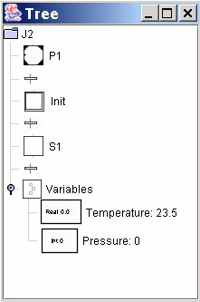

Zoom in on the current workspace with 10%. It is also possible to zoom in by holding Ctrl while scrolling up with the mouse.
Zoom out on the current workspace with 10%. It is also possible to zoom out by holding Ctrl while scrolling down with the mouse.
Zoom back to the default size.
Change the zoom on the current workspace so that all objects fit in the current workspace window.
Opens a hierarchical tree view navigation window. The tree view shows a snapshot of all the objects in the current workspace and all its subworkspaces. Left-clicking on a tree node selects the corresponding object in its corresponding workspace. Right-clicking on a tree node has the same effect as right-clicking on the corresponding object. Hierarchical objects can be expanded and collapsed. The snapshot will get outdated if anything changes and using an outdated tree view may lead to undesired behaviour.

Opens an overview window that contains a miniature of the contents of the current workspace. The overview window also contains an outlined rectangle showing the currently viewed portion of the workspace. If the rectangle is moved, the current workspace is scrolled accordingly. It is only possible to have one overview window open.
Show the palette in the editor.
Hide the palette in the editor. Can be useful during execution when the screen size is limiting.
Show the toolbar in the editor.
Hide the toolbar in the editor.